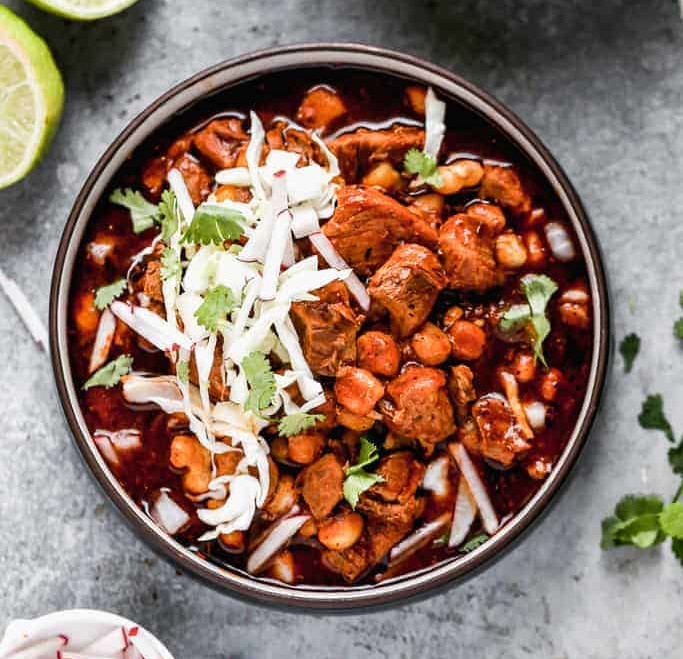

Pozole

Description
Talk about Mexican soul food; you can’t get more quintessential than Pozole! This Mesoamerican dish was an Aztec favorite before Columbus ever sailed the ocean blue. There are even restaurants specializing in it, called pozolerías!
Ingredients
- Pork Shoulder
- Garlic Cloves
- Yellow Onion
- Bay Leaves
- Oregano
- Ground Cumin
- Gaujillo
- Ancho
- Chile de Arbol
- Chicken Bouillon Granules
- Tomato Sauce
- Canned White Hominy
- Cabbage
- Cilantro
- Lime Wedges
- Avocado
- Radishes
- Corn Tortillas
Steps
- Trim and cube the pork
- Boil Chilies
- Blend the chilies and a few cloves of garlic
- Empty the chili saucepan, add a little oil and strain chili mixture back into pan. Simmer for 10 minutes
- From stockpot, strain out aromatics
- Add remaining Ingredients to stockpot and simmer for 30 minutes
- Laddle soup into bowls, apply toppings
Back Home